Task 01 — Animating 2D text
Five compositions built as prototypes rather than finished pieces, so that one variable changes between each and the difference can be compared directly. The set moves through the text panel, animation presets, variable animation speed, effects, and finally a combined composition. Each is shown as a full After Effects interface screenshot alongside its video export.
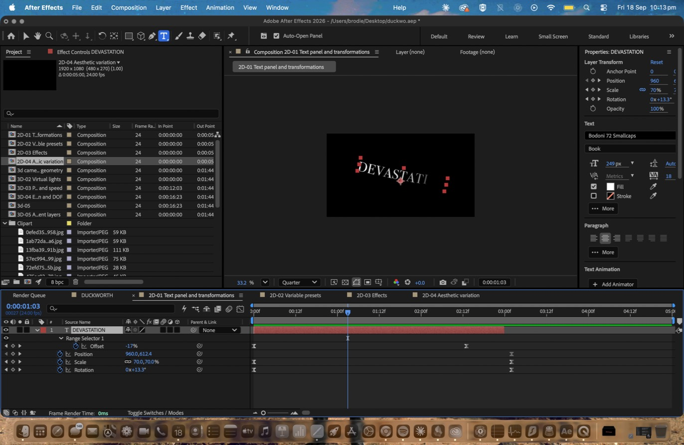
Type set in the text panel — Bodoni 72 Smallcaps at 249 px — then the Slide Down By Character animation preset applied so the characters cascade rather than arriving together. The preset’s Range Selector offset is keyframed from −100 %, and transformations run underneath it on scale, rotation and position.
The character-level animation and the layer-level animation resolve at different times, so the word does not land on a single frame. Everything that follows is a copy of this composition with one further variable introduced.
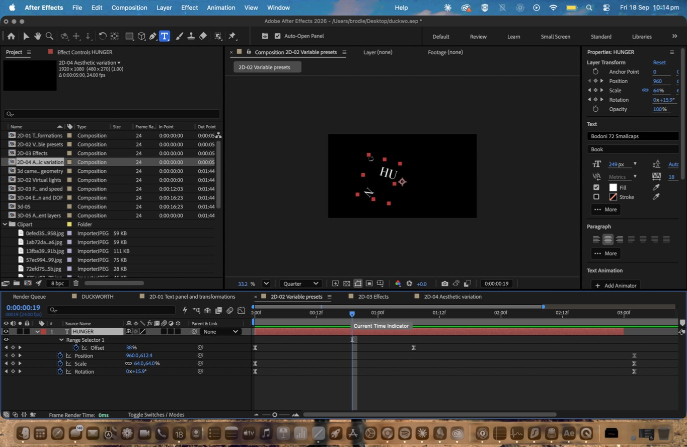
A second animation preset driving the characters through four full rotations on entry instead of a linear slide. The Range Selector end is held at 50 % so only half the string animates at any moment, and the key frames on Offset were reshaped in the graph editor into a steep attack decaying into a long tail.
Against the even cascade of 2D-01, the characters here arrive almost immediately and then take the rest of the duration to settle. Same duration, entirely different distribution of movement across it.
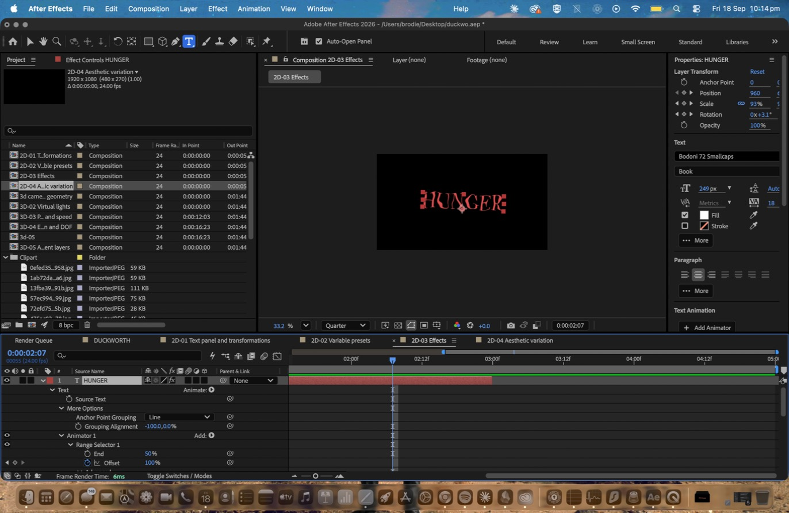
Turbulent Displace applied with the amount keyframed so the letterforms distort progressively rather than arriving pre-warped, and a Tint effect remapping the white of the type toward red across the same duration.
The Week 07 materials recommend turbulent displacement as a fast route to complex animation, which proved accurate — a single keyframed value generates continuous organic movement that would have taken dozens of transform keyframes to approximate.
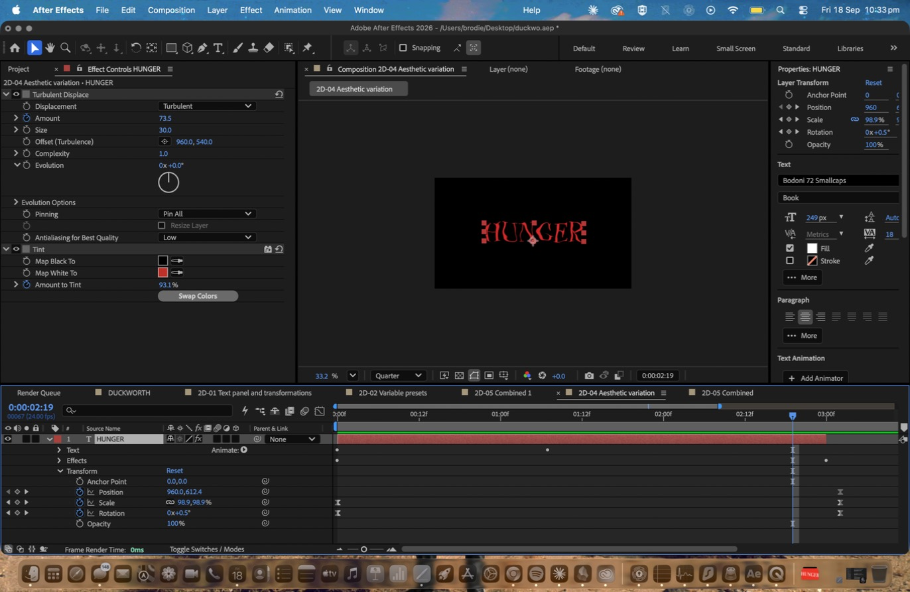
The Tint relationship reversed and the type rescaled, with Turbulent Displace pushed the opposite way — a low amount against a large size, so instead of a fine warp chewing the letterforms it becomes a slow, wide drift across the whole word.
Comparing this against 2D-03 isolates what the size value actually controls: the scale of the distortion field rather than its strength. Two compositions carrying the same effect produce completely different surfaces.
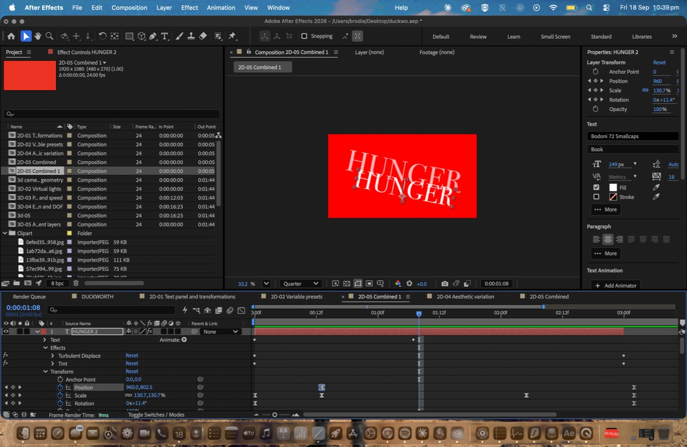
Two instances of the type offset in time over a red background layer, the rear one scaled to 130 % and tinted paler so it reads as depth rather than as a duplicate. The key frames on position, scale and rotation are staggered between the two layers.
Because the layers never land together, the composition completes in two movements instead of one. This is the closest the 2D set comes to the layered depth achieved with virtual cameras in Task 02.
Task 02 — Animating 3D text
The same iterative method carried into three dimensions using the Cinema 4D renderer. A two–node virtual camera driven by a chain of parented nulls, virtual lights casting shadows, geometry and material options on the type, depth of field, and an adjustment layer grading a whole composition at once.
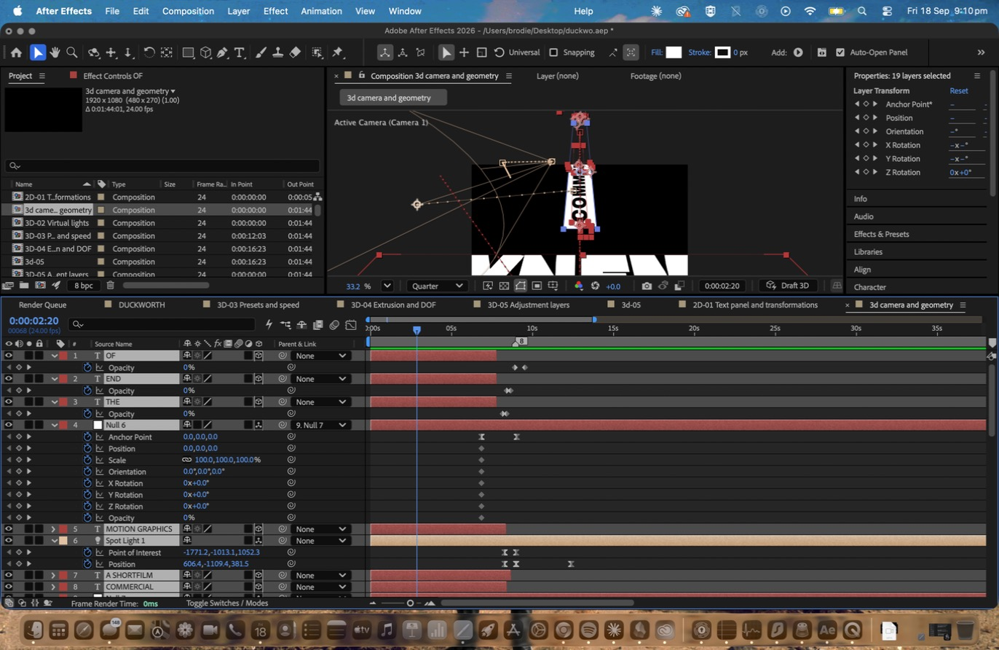
A two–node virtual camera at 20 mm, driven by a chain of parented nulls rather than keyframed directly, so the key frames on each null could be overlapped to produce a compound move smoother than a single camera animation allows. Geometry options applied an angular bevel to the 3D text so the edges catch light, and a Glow effect lifts the bevelled faces.
The 20 mm focal length exaggerates the perspective shift as the camera pushes in. This is the state of the composition before any virtual light was introduced, which is what makes the comparison against 3D-02 legible.
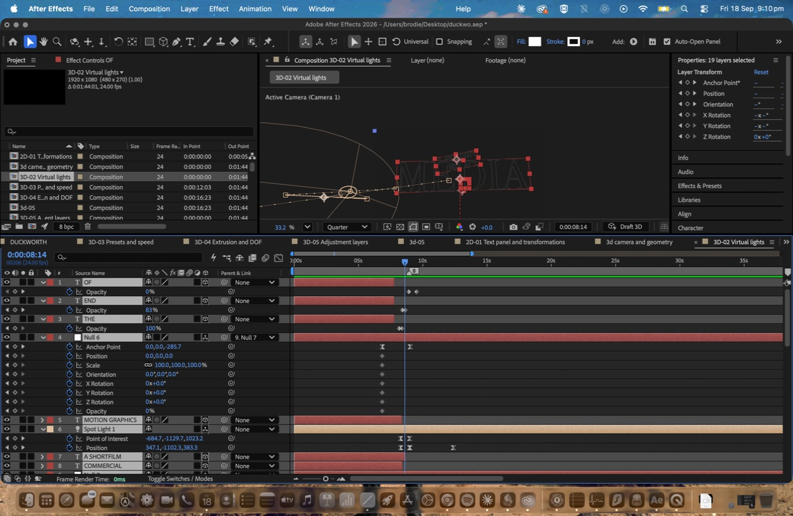
A spot virtual light at 150 % intensity on a 70° cone with Casts Shadows enabled and its position keyframed so the cast shadow travels. Material options on the hero text layer accept lights and shadows, while the surrounding graphic elements were set to Accepts Lights: Off so they stay flat.
Additional nulls parented into the camera chain give the text a floating drift independent of the camera move. A fade–in combines with an opacity drop on the background so the field inverts from white to black, and the light then brings the word into focus as the camera draws back — the reveal is done by lighting rather than by a scale or opacity keyframe.
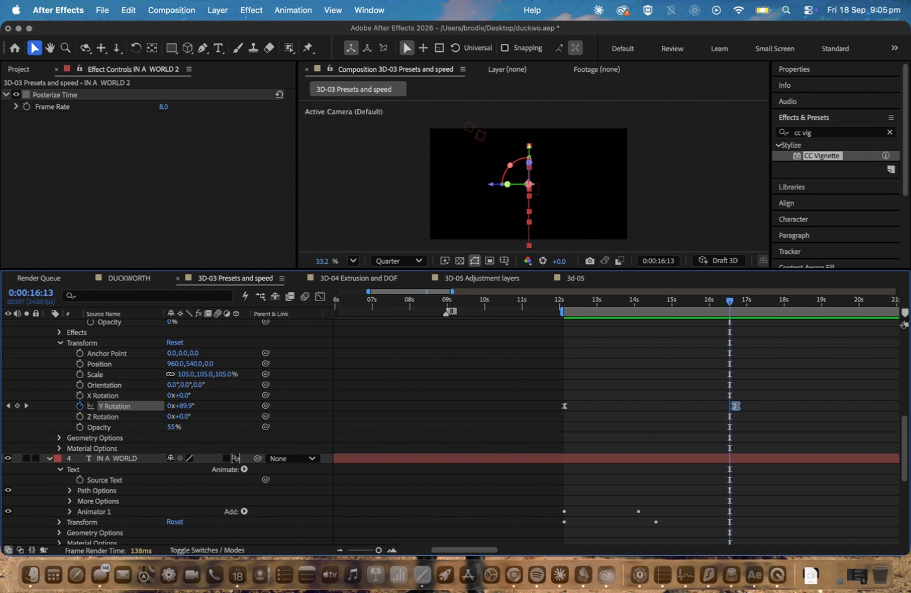
The 3D Basic Rotate X Cascade In animation preset applied to 3D text, then retimed three ways in a single composition. The speed graph shows the key frames reshaped to a 300 %/sec peak so the motion accelerates hard and decays slowly, and a duplicate layer carries Posterize Time at 8 fps against the composition’s 24 fps base.
Compared with the continuous camera move in 3D-01, the 8 fps version reads mechanical and the eased version reads weighted. The same preset over the same duration, with an entirely different sense of mass.
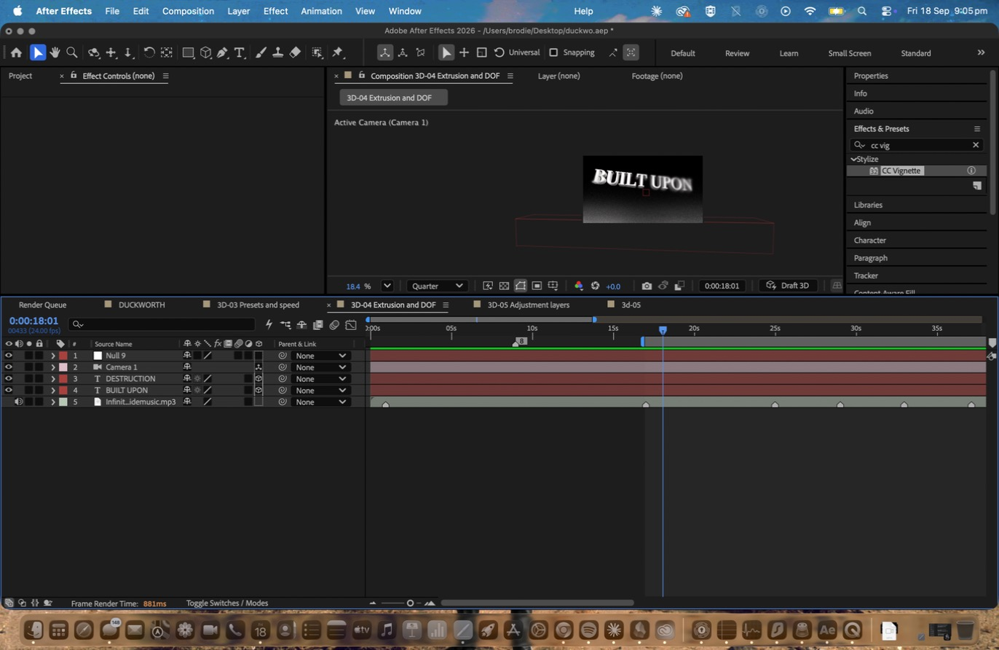
Geometry options set the extrusion depth with an angular bevel on the 3D text, duplicated across several Z positions. Depth of field was enabled in the virtual camera’s camera options and the focus distance keyframed to rack from the nearest layer to the furthest.
Spreading the layers through Z and pulling focus between them separates foreground from background without changing size — which is what stops flat layers in a 3D composition reading as stacked cards.
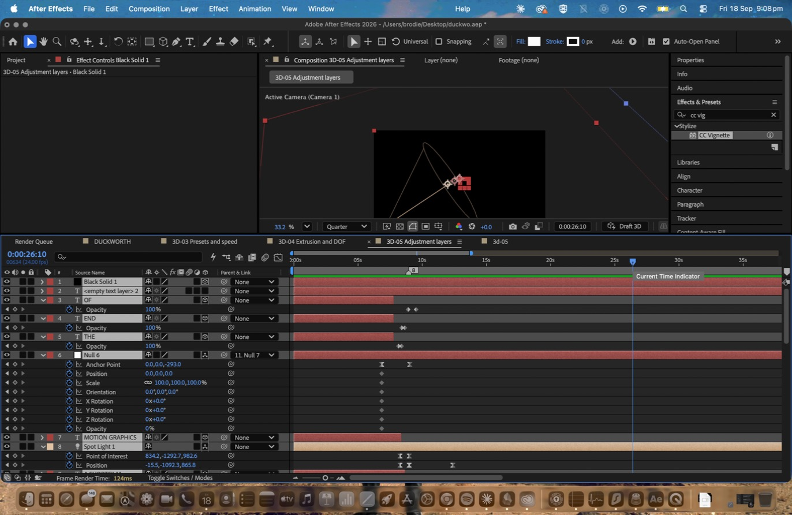
A background layer pushed back in Z gives the scene depth behind the type. An adjustment layer at the top of the stack carries Lumetri Color, Glow and CC Vignette, so a single layer grades every layer beneath it. Its opacity is keyframed from 0 to 100 so the contribution of the adjustment layer is directly visible on screen.
Applying the same effects layer by layer would have meant duplicating them across every element, and would not have graded the background consistently with the type.
Task 03 — Refining, timing and compositing
Selected sequences from the ten prototypes composited into one piece and cut against the waveform. Layer markers were tapped live against the audio before any animation was timed, so every cut lands on a hit rather than near one.
Seven of the ten prototypes were carried into the final edit. The opening runs on the 3D camera and lighting sequences — DYNEMA PRESENTS, MOTION GRAPHICS and the lit MEDIA reveal — before the preset and speed work brings IN A WORLD in at twelve seconds. The 2D compositions occupy the middle, from sixteen to twenty-two seconds, and the piece closes on the extruded BUILT UPON and DESTRUCTION sequences with the depth of field pull, resolving on DEVASTATION. 2D-02 was cut: its four-rotation entry fought the pace of the section it landed in. Every cut was trimmed to a layer marker tapped against the waveform on playback.
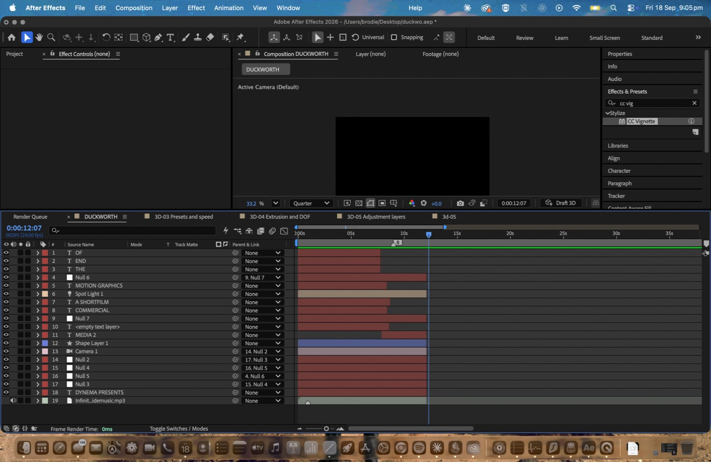
The audio layer sits at the bottom with its waveform displayed and the layer markers above it. The marker positions were set first, by tapping against the track on playback, and every sequence was then trimmed to them — timing decided after the animation never synchronises properly.
Task 04 — Reflective Report
REFLECTION_GOES_HERE
References
Online tutorials and exemplars used in the research and development of this assignment.
- Voyce, M. Kinetic typography work. Referenced as the 2D exemplar in the Week 07 course materials.
- Art of the Title. Referenced as the title-design exemplar in the Week 08 course materials.
- SUPER QUICK Kinetic Typography in After Effects — Adobe. Text panel parameters, transformations and keyframing presets.
- How to Create Kinetic Text With Waves in After Effects. Turbulent displacement as a route to complex animation from a single keyframed parameter.
- Kinetic Text After Effects Tutorial — Animated Typography Techniques [NO PLUGINS]. Timing and synchronising kinetic text to sound using layer markers.
- Create 3D Text with NO PLUG INS (After Effects). Adding a virtual camera, the orbit tool, point of focus, and material options.
- Create A Dynamic 3D Text Animation In After Effects (No Plugins). Cinema 4D renderer, geometry options and extrusion depth.
- Delete any of the above you did not actually use, and add any others you watched.